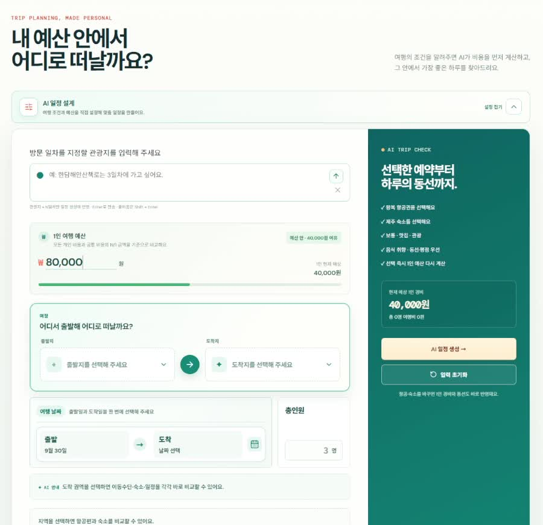
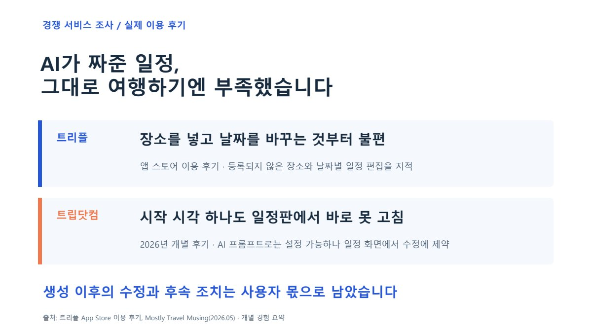
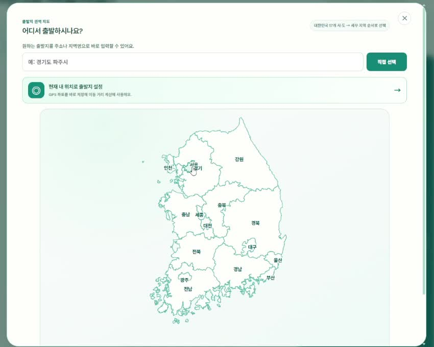
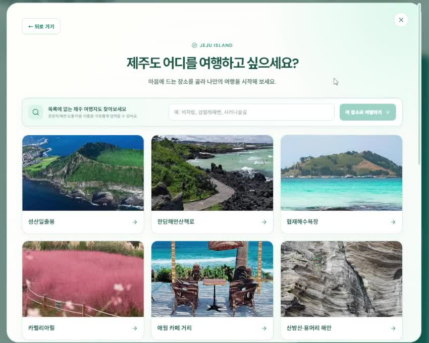
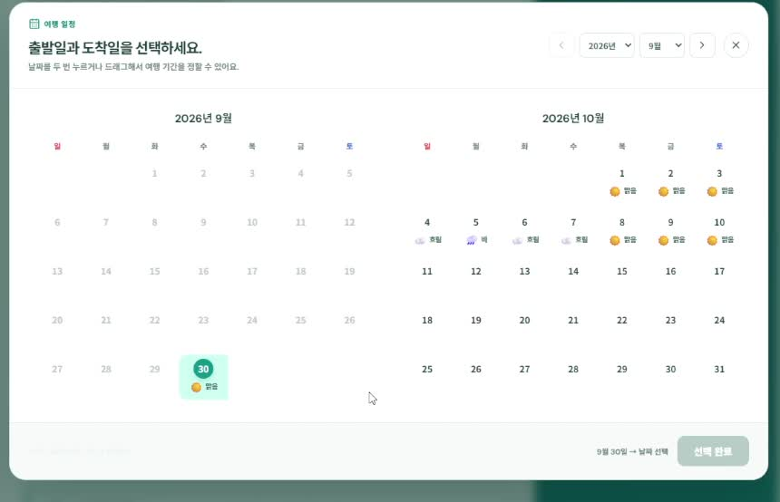
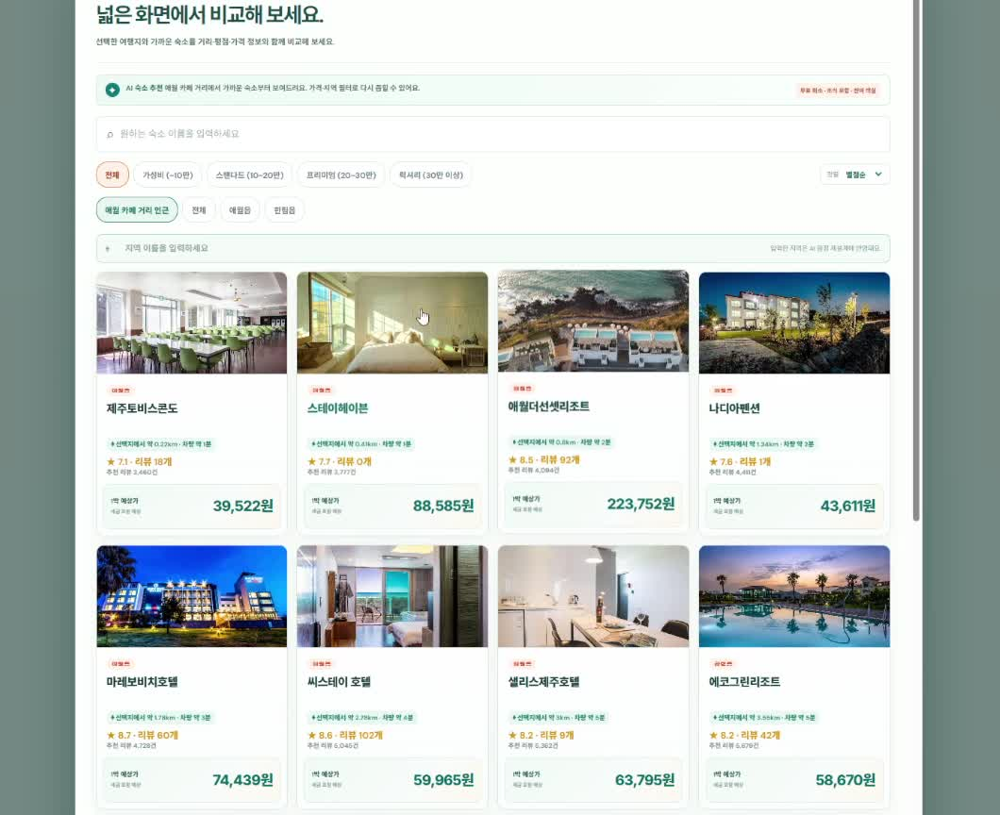
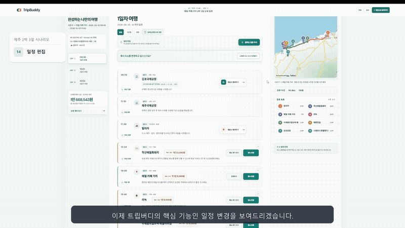
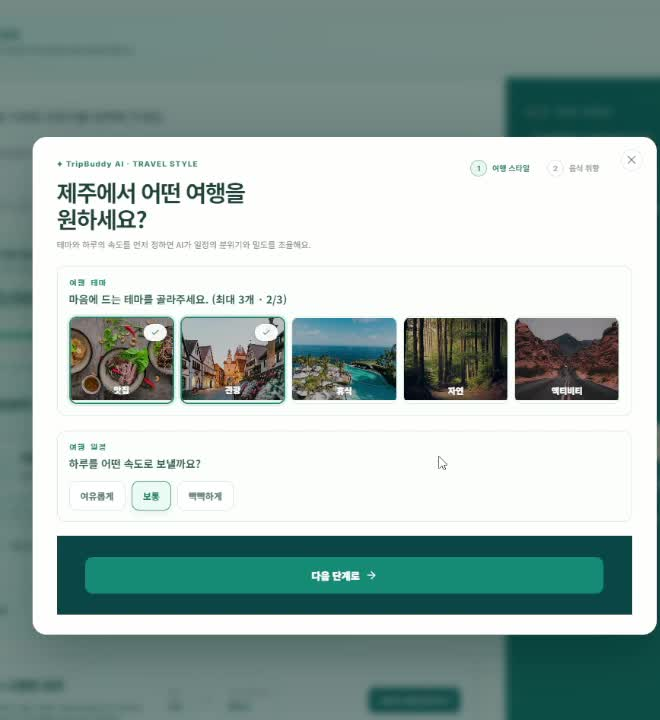
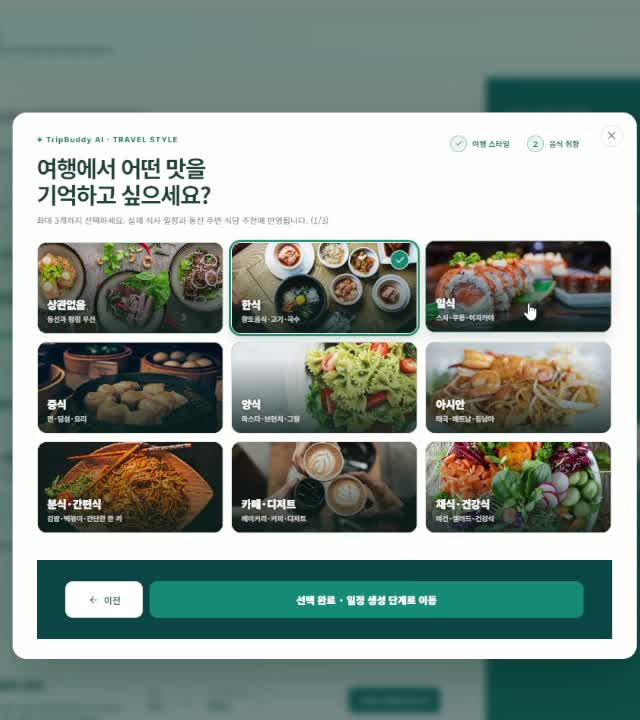

01 · 예산
예산을 가장 먼저 정합니다
‘주어진 예산 안에서 일정을 만든다’는 목표를 첫 화면에 반영했습니다.
사용자가 정한 예산을 바탕으로 교통편과 숙소를 고르고, AI가 여행 일정을 만들도록 했습니다.

TripBuddy는 예산 안에서 여행 일정을 만드는 AI 여행 플랫폼입니다.
여행을 떠난 뒤에도 모바일에서 장소와 방문 순서를 수정할 수 있습니다.
제주 2박 3일 계획을 만들고 수정하는 실제 시연입니다. 원하는 장면부터 볼 수 있습니다.
1920 × 1080 · 약 6분 21초 · 자막·음성 포함
다운로드: 시연 영상 MP4
여행 조건 입력부터 일정 수정까지의 화면을 맡았습니다.
백엔드·인프라 담당자와 협업해 선택한 조건을 서버에 전달하고, 결과를 화면에 표시했습니다.
백엔드와 AWS 인프라는 각 담당자가 맡은 팀 결과물입니다.
PC에서 세운 계획을 여행지에서는 모바일로 확인합니다.
순서가 바뀌거나 다른 식당에 가고 싶을 때, 그 자리에서 일정을 수정할 수 있습니다.
방문 순서 변경 → 대체 장소 선택 → 이동 경로 확인.
작은 화면에서도 필요한 작업을 이어서 할 수 있게 했습니다.
다운로드: 전체 시연 MP4
항공권·숙소를 비교하고, 관광지와 식당을 찾고, 지도에서 이동 시간을 확인해야 했습니다.
현지에서 한 장소가 바뀌면 동선과 남은 시간도 다시 계산해야 했습니다.
TripBuddy에서는 계획을 만들고 수정하는 일을 한곳에서 할 수 있도록 했습니다.
경쟁 서비스의 개별 후기에서 장소·날짜·시간을 수정할 때 겪는 불편을 참고했습니다.

개별 경험을 참고한 자료이며, 전체 이용자의 평가를 뜻하는 통계는 아닙니다.
발표자료에서 보기 →예산과 여행 날짜를 정한 뒤, 교통편과 숙소를 고릅니다.
여기에 여행 테마와 음식 취향을 더해 나에게 맞는 일정을 만듭니다.
예산 → 출발지·목적지 → 날짜 → 교통·숙소 → 취향 → 일정 생성
‘주어진 예산 안에서 일정을 만든다’는 목표를 첫 화면에 반영했습니다.
사용자가 정한 예산을 바탕으로 교통편과 숙소를 고르고, AI가 여행 일정을 만들도록 했습니다.

자차 여행은 어디서 출발하느냐에 따라 이동 시간이 달라집니다.
시·구·동 단위 지도와 주소 입력으로 출발 위치를 자세히 정할 수 있게 했습니다.

여행을 생각할 때는 ‘어느 구’보다 ‘속초에 갈까, 해운대에 갈까’를 먼저 떠올립니다.
그래서 목적지는 관광 지역과 명소를 중심으로 고르게 했습니다.

교통편과 숙소를 선택하려면 여행 날짜가 먼저 필요합니다.
교통편과 객실 상황은 날짜에 따라 달라지므로, 날짜를 먼저 고르게 했습니다.
숙소를 선택하면 그 위치를 중심으로 관광지와 식당을 추천합니다.


선택한 항공편 시간과 숙소 위치에 맞춰 날짜별 일정을 보여줍니다.
시간표 옆에 지도를 두고, 방문 순서를 바꾸거나 다른 장소로 교체할 수 있게 했습니다.


항공·KTX와 자차의 시간 입력을 나눈 이유, 마지막에 취향을 배치한 이유를 정리했습니다.
처음에는 날짜 화면에 출발시각을 넣었습니다.
하지만 항공·KTX는 티켓 시각이 기준이므로, 공통 날짜 화면에서 뺐습니다.
같은 시간 정보라도 교통수단에 따라 입력 방식을 달리했습니다.
교통편과 숙소를 고른 뒤에는 어떤 여행을 즐기고 싶은지 묻습니다.
여행 테마, 하루에 둘러볼 일정의 양, 좋아하는 음식을 골라 추천에 반영합니다.


제주 2박 3일은 대표 시연입니다. 설계에서는 국내의 다양한 출발지·목적지와 항공·KTX·자차를 고려했습니다.
지역별 장소·교통·숙소·경로 데이터가 확보되면, 그 조건을 참고해 일정을 구성할 수 있습니다.
국내 다른 지역에서도 조건을 입력하고 일정을 수정하는 같은 방식으로 이용하도록 설계했습니다.
기획 배경과 팀의 구현 과정을 담은 46장입니다.
버튼이나 키보드 방향키로 한 장씩 넘겨볼 수 있습니다.

발표 슬라이드를 이미지로 보여주는 미리보기입니다. 시연 영상은 위의 영상 플레이어에서 볼 수 있습니다.
다운로드: 발표 PDF · 영상 포함 PPT 원본
데이터: 좌표·거리·시간·가격을 화면에서 사용할 형식으로 변환했습니다.
AI 생성: 처리 상태를 확인해 대기 중인지, 완료됐는지 표시했습니다.
공통 처리: 인증·세션·오류 처리를 모아 각 화면에서 재사용했습니다.
API 공통 처리 · AI 일정 연동 · 일정 편집 화면 · 경비 계산
항공·숙소 금액은 예상 견적이며, 렌터카 업체·가격은 시연용 데이터입니다. 일부 상세 정보는 요청 실패 시 대체 데이터를 사용합니다. 실제 결제·예약 확정 기능이나 국내 모든 지역의 품질 검증을 의미하지 않습니다.
실습용 AWS 환경은 2026년 10월 8일 종료 예정입니다. 이후 온라인 AI 생성·외부 데이터 조회는 이용할 수 없지만, 이 페이지의 영상과 발표자료는 계속 확인할 수 있습니다. PWA의 정적 자산 캐시와 온라인 AI·지도 기능은 구분됩니다.
React 19 · Vite 8 · Tailwind CSS 4 · Kakao Maps · Java 21 · Spring Boot 4 · MariaDB · Redis · Amazon Bedrock · SQS
개발은 별도 비공개 팀 저장소에서 진행했습니다. 공개 저장소의 커밋·기여자 표시는 전체 개발 이력이나 개인별 기여도를 나타내지 않습니다. 실행 방법과 기존 팀 개발 이력은 GitHub README에서 확인할 수 있습니다.